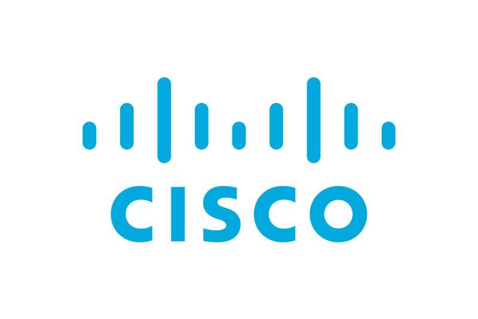

Negli ultimi anni si parla sempre più spesso di Green Computing, un concetto che nasce dalla necessità di rendere l'informatica e le tecnologie digitali meno dannose per l'ambiente. Computer, reti e infrastrutture di telecomunicazione sono ormai parte fondamentale della nostra vita quotidiana, ma il loro funzionamento richiede grandi quantità di energia e risorse. Per questo motivo, molte aziende del settore delle reti informatiche stanno cercando soluzioni innovative che permettano di ridurre l'impatto ambientale senza rallentare il progresso tecnologico. Il Green Computing rappresenta una risposta concreta alle sfide ambientali poste dallo sviluppo tecnologico. Nel settore delle reti informatiche, aziende come Cisco, Ericsson e Juniper Networks dimostrano che è possibile unire innovazione, efficienza e rispetto per l'ambiente. Investire in reti sostenibili non significa solo ridurre i costi energetici, ma anche assumersi una responsabilità nei confronti del pianeta e delle generazioni future, costruendo un futuro digitale più consapevole e sostenibile.
CISCO
Nel campo del networking, una delle aziende più attive su questo fronte è Cisco. Questa azienda è conosciuta in tutto il mondo per la produzione di router, switch e altre apparecchiature di rete. Negli ultimi anni, Cisco ha investito molto nello sviluppo di dispositivi più efficienti dal punto di vista energetico, capaci di adattare il proprio consumo in base al traffico di rete reale. In questo modo si evita uno spreco inutile di energia. Inoltre, Cisco promuove l'uso di fonti rinnovabili nei propri edifici e offre programmi per il riciclo delle apparecchiature elettroniche a fine vita. Le sue tecnologie, infine, favoriscono il lavoro da remoto e la collaborazione online, contribuendo indirettamente a ridurre gli spostamenti e quindi l'inquinamento.

Ericsson
Un altro esempio importante è Ericsson, azienda leader nel settore delle telecomunicazioni mobili. Ericsson lavora da anni allo sviluppo di reti 4G e 5G sempre più efficienti, progettate per garantire alte prestazioni consumando meno energia. Le stazioni radio moderne, grazie a nuove tecnologie, sono in grado di spegnere automaticamente alcune funzioni quando il traffico è basso, riducendo così i consumi. L'azienda presta anche molta attenzione ai materiali utilizzati nella produzione dei propri dispositivi e si impegna a ridurre le emissioni di anidride carbonica lungo tutta la filiera produttiva. In questo modo, Ericsson contribuisce a rendere le reti di comunicazione non solo più veloci, ma anche più sostenibili.

Juniper Networks
Anche Juniper Networks svolge un ruolo importante nel campo del Green Computing applicato alle reti. Le soluzioni proposte da questa azienda puntano a semplificare le infrastrutture di rete, rendendole più efficienti e facili da gestire. Utilizzando meno dispositivi e ottimizzando il traffico di rete, è possibile ridurre sia il consumo di energia sia il calore prodotto nei data center. Un altro aspetto fondamentale è la maggiore durata degli apparati, che permette di limitare la produzione di rifiuti elettronici, uno dei problemi ambientali più rilevanti legati al mondo dell'informatica.